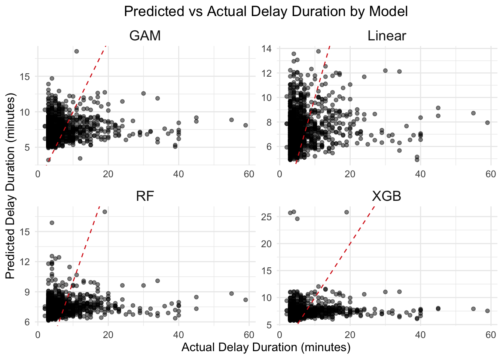
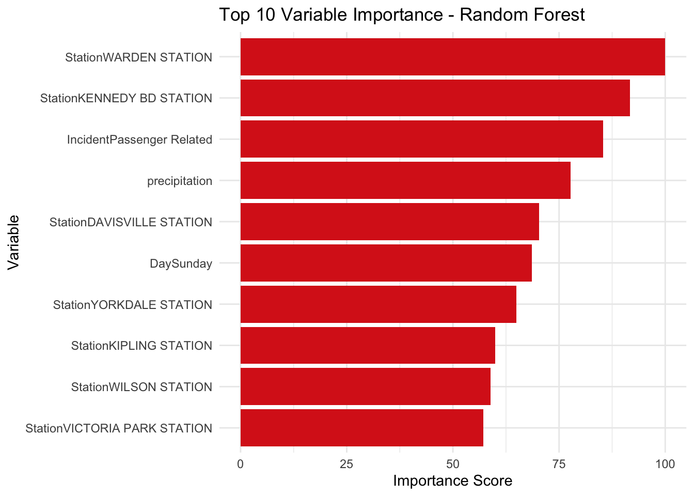

Predictive Modeling of Subway Delay Duration
In the second phase of this project, I aim to develop and compare multiple predictive models to estimate the duration of subway delays across Toronto’s TTC system. Building on prior exploratory findings, the objective is to quantify how factors such as time of day, subway line, station location, day of the week, and delay cause influence delay duration.
The response variable will be delay duration (in minutes). Predictor variables will include:
- Temporal Variables: Hour of the day, peak vs. non-peak, day of the week
- Spatial Variables: Station name, subway line
- Incident Characteristics: Delay cause (Passenger Related vs Non-Passenger Related)
I will implement a variety of regression models including:
- Linear Regression (as a baseline)
- Generalized Additive Models (to capture non-linear temporal effects)
- Random Forest and Gradient Boosting Models (to capture interactions and complex dependencies)
Model performance will be evaluated using RMSE, MAE, and \(\mathbf{R^2}\) metrics on a holdout test set (80/20 split). This comparative analysis will identify the most suitable approach for forecasting subway delay durations and inform operational decision-making for delay mitigation strategies.
Model Fitting
We start by fitting a linear regression model as a baseline. Then, a Generalized Linear Model (GAM) is fit. We will have a smoothing factor on Hour since time-of-day effects can be non-linear as well as precipitation, since heavy rainfall and snowfall might have an exponentially larger effect. We will reduce the model to incorporate only significant variables and pick the best model by compare the Akaike Information Criterion (AIC) values. Finally, we will implement and compare several regression models using historical TTC delay data. Specifically, I will fit a linear regression, a generalized additive model (GAM), a random forest, and an XGBoost regressor, using predictors such as time of day, precipitation, station, subway line, day of the week, delay type, and peak hour classification. Model performance will be evaluated using RMSE, MAE, and R² metrics on a held-out test set. This comparative analysis will identify the most accurate and robust modeling approach for understanding and forecasting subway delays.

| Model | R2 | RMSE | MAE |
|---|---|---|---|
| Linear | 0.0101 | 6.3200 | 4.0820 |
| GAM | 0.0109 | 6.3207 | 4.0785 |
| Random Forest | 0.0120 | 6.2582 | 4.0799 |
| XGBoost | 0.0063 | 6.3422 | 4.0913 |
Each model was trained on a consistent set of predictors including time of day, precipitation, station, line, day of the week, incident type, and peak vs. non-peak designation. Performance was assessed on a held-out test set using three standard regression metrics: Root Mean Squared Error (RMSE), Mean Absolute Error (MAE), and R².
Among the models, the Random Forest achieved the best overall performance with the lowest RMSE (6.2582) and highest R² (0.0120), indicating slightly better predictive accuracy and explanatory power compared to the others. The GAM and Linear Regression models produced very similar results, suggesting that delay duration may have limited nonlinearity or that the key nonlinear effects are already captured by categorical variables. Surprisingly, XGBoost, despite its typical performance advantages on structured data, underperformed in this case, yielding the highest RMSE (6.3422) and lowest R² (0.0063).
The predicted vs. actual scatter plots further illustrate these findings. All models show a strong clustering of points in the 0–10 minute range, where the majority of delays occur, but consistently underpredict longer delays. This is evident from the downward curvature below the ideal prediction line (red dashed), especially in the 15–40 minute range, suggesting that none of the models fully captured the drivers of extreme delay events. The Random Forest plot demonstrates slightly better spread along the diagonal, but the overall prediction quality remains limited.
Feature Importance
To better understand which factors most strongly influence subway
delay duration predictions, feature importance was extracted from the
Random Forest and XGBoost models.

In the Random Forest model, the top contributing features were specific stations, with Warden Station and Kennedy BD Station ranking highest. This suggests that certain stations may be systematically more prone to longer delays. Additionally, passenger-related incidents, precipitation, and Sunday delays also appeared as important predictors, highlighting both spatial and temporal influences on delay severity.
In contrast, the XGBoost model placed overwhelming emphasis on precipitation, identifying it as the dominant predictor of delay duration. Station effects were present but less pronounced, with Yorkdale, Warden, and Keele among the top-ranked. Notably, incident type, hour of day, and day of week played a smaller role.
These differing importance profiles highlight how model architecture affects variable interpretation: Random Forests tend to capture strong categorical interactions (e.g., specific stations), while XGBoost may better exploit numerical gradients like precipitation. The convergence around precipitation, stations, and incident type across both models suggests these are key factors shaping subway delay behavior.
Conclusion
Based on the models developed in this analysis, we can estimate the duration of subway delays using predictors such as station location, time of day, day of week, incident type, and precipitation. However, the overall predictive accuracy is limited. All four models—Linear Regression, GAM, Random Forest, and XGBoost—produced relatively low R² values (all below 0.02), indicating that the current set of predictors explains only a small portion of the variability in delay duration.
While tree-based models like Random Forest performed slightly better in terms of RMSE and variable importance analysis revealed that precipitation, specific stations, and passenger-related incidents were consistently influential, all models struggled to predict longer or outlier delays. The clustering of predictions in the 0–10 minute range and the underestimation of extreme delays suggest that important explanatory factors may be missing, such as real-time ridership levels, operational disruptions, or special events.
In conclusion, although it is possible to estimate delay durations to a limited degree using the available predictors, the low explanatory power indicates that more granular or contextual data is needed to build reliable and actionable prediction models.
Copyright © 2025. Avi Walia.